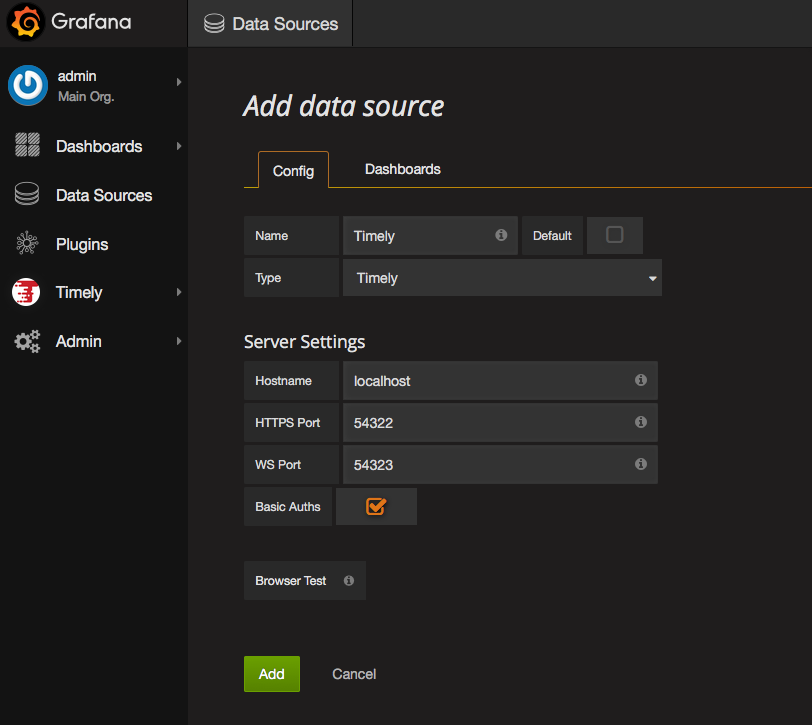
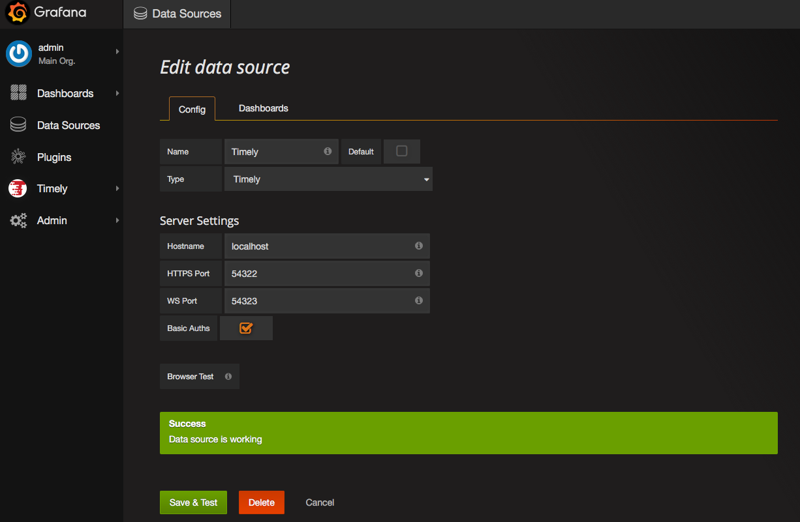
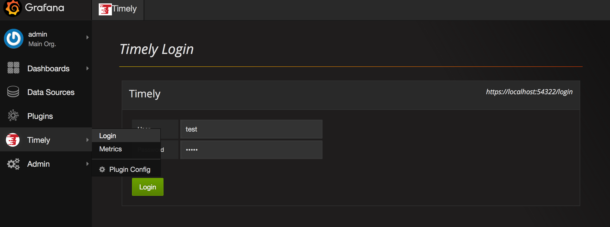

Introduction
Timely is a time series database application that provides secure access to time series data. Timely is written in Java and designed to work with Apache Accumulo and Grafana.
Getting Started
Getting started with Timely requires that you:
Use the standalone server to get a test environment up and running quickly
Timely should accept data from TCollector with no changes. A plugin exists for sending data from CollectD.
- Send metrics to Timely using CollectD, OpenTSDBs TCollector, etc.
Timely Server
Starting Timely
Note: The Timely server requires a Java 8 runtime. Timely utilizes iterators for Apache Accumulo, so your Accumulo instance will need to be run with Java 8 also.
If you are just starting out with Timely and want to see what it can do, then start up the standalone server using the bin/timely-standalone.sh script. This will start up the necessary HDFS, Accumulo, and Timely processes on your local machine. You can use the bin/insert-test-data*.sh scripts to push same fake data to the Timely server.
To deploy Timely with a running Accumulo instance you will need to modify the conf/timely.properties file appropriately. Then copy the lib/timely-server.jar and lib/commons-lang3-*.jar files to your Accumulo tablet servers. Finally, launch Timely using the bin/timely-server.sh script.
SSL Setup
To user Timely, both Timely and Grafana will need to use SSL certificates. Grafana requires a PEM encoded certificate file and an un-encrypted PEM private key file. Timely requires a PEM encoded certificate file and a PKCS#8 encoded private key file. Timely supports private keys with and without a password, just comment out the timely.ssl.key.pass property if there is no password for your private key.
Creating your own SSL keys and certificates
There are plenty of resources on the Internet for doing this. This example is taken from instructions in the Accumulo user manual.
Create your Certificate Authority
Create a private key
openssl genrsa -des3 -out CA.key 4096
Create a certificate request using the private key
openssl req -x509 -new -key CA.key -sha256 -nodes -days 365 -out CA.pem
Create your SSL material for Grafana
Create the private key for the Grafana server
openssl genrsa -out grafana.key 4096
Generate a certificate signing request (CSR) with our Grafana private key
openssl req -new -key grafana.key -sha256 -nodes -out grafana.csr
Use the CSR and the CA to create a certificate for the server (a reply to the CSR)
openssl x509 -req -in grafana.csr -CA CA.pem -CAkey CA.key -CAcreateserial -out grafana.crt -days 365
Create your SSL material for Timely
Create the private key for the Timely server
openssl genrsa -out timely.key 4096
Generate a certificate signing request (CSR) with our Timely private key
openssl req -new -key timely.key -sha256 -nodes -subj '/C=US/ST=Confusion/L=Here/O=Timely/OU=Server/CN=localhost/emailAddress=noreply@localhost/subjectAltName=DNS.1=127.0.0.1' > timely.csr
Use the CSR and the CA to create a certificate for the server (a reply to the CSR)
openssl x509 -req -in timely.csr -CA CA.pem -CAkey CA.key -CAcreateserial -out timely.crt -days 365
Convert the private key to pkcs#8 format
openssl pkcs8 -topk8 -inform PEM -outform PEM -in timely.key -out timely-pkcs8.key
Configuration
The NUM_SERVER_THREADS variable in the timely-server.sh script controls how many threads are used in the Netty event group for TCP and HTTP operations. The TCP and HTTP groups use a different event group, so if you set the value to 8, then you will have 8 threads for TCP operations and 8 threads for HTTP operations. The properties file in the conf directory supports the following properties:
Note: Each thread in the Timely server that is used for processing TCP put operations has its own BatchWriter. Each BatchWriter honors the
timely.write.latencyandtimely.write.threadsconfiguration property, but the buffer size for each BatchWriter istimely.write.buffer.sizedivided by the number of threads. For example, if you have 8 threads processing put operations and the following settings, then you will have 8 BatchWriters each using 2 threads with a 30s latency and a maximum buffer size of 128M: timely.write.latency=30s, timely.write.threads=2 timely.write.buffer.size=1GNote: The
timely.scanner.threadsproperty is used for BatchScanners on a per query basis. If you set this to 32 and have 8 threads processing HTTP operations, then you might have 256 threads concurrently querying your tablet servers. Be sure to set your ulimits appropriately.Note: The Timely server contains an object called the meta cache, which is a cache of the keys that would be inserted into the meta table if they did not already exist. This cache is used to reduce the insert load of duplicate keys into the meta table and to serve up data to the
/api/metricsendpoint. The meta cache is an object that supports eviction based on last access time and can be tuned with thetimely.meta.cache.*properties.
| Property | Description | Default Value |
|---|---|---|
| timely.ip | The ip address where the Timely server is running | |
| timely.port.put | The port that will be used for processing put requests | |
| timely.port.query | The port that will be used for processing query requests | |
| timely.port.websocket | The port that will be used for processing web socket requests | |
| timely.instance_name | The name of your Accumulo instance | |
| timely.zookeepers | The list of Zookeepers for your Accumulo instance | |
| timely.username | The username that Timely will use to connect to Accumulo | |
| timely.password | The password of the Accumulo user | |
| timely.table | The name of the metrics table | timely.metrics |
| timely.meta | The name of the meta table | timely.meta |
| timely.write.latency | The Accumulo BatchWriter latency | 5s |
| timely.write.threads | The Accumulo BatchWriter number of threads | default |
| timely.write.buffer.size | The Accumulo BatchWriter buffer size | default |
| timely.metric.age.off.days | The number of days to keep metrics | 7 |
| timely.cors.allow.any.origin | Allow any origin in cross origin requests (true/false) | false |
| timely.cors.allow.null.origin | Allow null origins in cross origin requests (true/false) | false |
| timely.cors.allowed.origins | List of allowed origins in cross origin requests (can be null or comma separated list) | |
| timely.cors.allowed.methods | List of allowed methods for cross origin requests |
|
| timely.cors.allowed.headers | Comma separated list of allowed HTTP headers for cross origin requests | content-type |
| timely.cors.allow.credentials | Allow credentials to be passed in cross origin requests (true/false) | true |
| timely.scanner.threads | Number of BatchScanner threads to be used in a query | 4 |
| timely.metrics.report.tags.ignored | Comma separated list of tags which will not be shown in the /api/metrics response | |
| timely.meta.cache.expiration.minutes | Number of minutes after which unaccessed meta information will be purged from the meta cache | 60 |
| timely.meta.cache.initial.capacity | Initial capacity of the meta cache | 2000 |
| timely.meta.cache.max.capacity | Maximum capacity of the meta cache | 10000 |
| timely.ssl.certificate.file | Public certificate to use for the Timely server (x509 pem format) | |
| timely.ssl.key.file | Private key to use for the Timely server (in pkcs8 format) | |
| timely.ssl.key.pass | Password to the private key | |
| timely.ssl.use.generated.keypair | Use a generated certificate/key pair - useful for testing | false |
| timely.ssl.trust.store.file | Certificate trust store (a concatenated list of trusted CA x509 pem certificates) | |
| timely.ssl.use.openssl | Use OpenSSL (vs JDK SSL) | true |
| timely.ssl.use.ciphers | List of allowed SSL ciphers | see Configuration.java |
| timely.session.max.age | Setting for max age of session cookie (in seconds) | 86400 |
| timely.http.host | Address for the Timely server, used for the session cookie domain | |
| timely.allow.anonymous.access | Allow anonymous access | false |
| timely.visibility.cache.expiration.minutes | Column Visibility Cache Expiration (minutes) | 60 |
| timely.visibility.cache.initial.capacity | Column Visibility Cache Initial Capacity | 2000 |
| timely.visibility.cache.max.capacity | Column Visibility Cache Max Capacity | 10000 |
| timely.web.socket.timeout | Number of seconds with no client ping response before closing subscription | 60 |
| timely.ws.subscription.lag | Number of seconds that subscriptions should lag to account for latency | 120 |
| timely.http.redirect.path | Path to use for HTTP to HTTPS redirect | /secure-me |
| timely.hsts.max.age | HTTP Strict Transport Security max age (in seconds) | 604800 |
Data Storage
Metrics sent to Timely are stored in two Accumulo tables, meta and metrics.
Meta Table Format
| Row | ColumnFamily | ColumnQualifier | Value |
|---|---|---|---|
| m:metric | |||
| t:metric | tagKey | ||
| v:metric | tagKey | tagValue |
Metric Table Format
| Row | ColumnFamily | ColumnQualifier | Value |
|---|---|---|---|
| metric\timestamp | tagKey=tagValue | tagKey=tagValue,tagKey=tagValue,… | metricValue |
Data Storage Example
As an example, if you sent the following metric to the put api: sys.cpu.user 1447879348291 2.0 rack=r001 host=r001n01 instance=0 it would get stored in the following manner in the meta table:
| Row | ColumnFamily | ColumnQualifier | Value |
|---|---|---|---|
| m:sys.cpu.user | |||
| t:sys.cpu.user | host | ||
| t:sys.cpu.user | instance | ||
| t:sys.cpu.user | rack | ||
| v:sys.cpu.user | host | r001n01 | |
| v:sys.cpu.user | instance | 0 | |
| v:sys.cpu.user | rack | r001 |
and in the following manner in the metrics table
Note: Not shown in the examples is the encoding of the row and value. You can apply the Timely formatter to your metrics table using the Accumulo shell command:
config -t timely.metrics -s table.formatter=timely.util.TimelyMetricsFormatter
| Row | ColumnFamily | ColumnQualifier | Value |
|---|---|---|---|
| sys.cpu.user\1447879348291 | host=r001n01 | instance=0,rack=r001 | 2.0 |
| sys.cpu.user\1447879348291 | instance=0 | host=r001n01,rack=r001 | 2.0 |
| sys.cpu.user\1447879348291 | rack=r001 | host=r001n01,instance=0 | 2.0 |
Accumulo Configuration
You can generate split points for the metrics table after sending data to Timely for a short amount of time. The bin/get-metric-split-points.sh script will print out a set of split points based on the metric names in the meta table. Yuo can use this output in the Accumulo addsplits command.
You can lower the table.scan.max.memory property on your metrics table. This will send data back from the Tablet Servers to the Timely server at a faster rate.
If you don’t mind losing some metric data in the event of an Accumulo tablet server death, you can set the table.walog.enabled property to false and the table.durability property to none on your metrics table. This should speed up ingest a little.
Security
Timely allows users to optionally label their data using Accumulo column visibility expressions. To enable this feature, users should put the expressions in a tag named viz. Timely will flatten this expression and store it in the column visibility of the data point in the metrics table. Column visibilities are not stored in the meta table, so anyone can see metric names, tag names, and tag values.
With anonymous access users that have not logged in will only see unlabeled data.
Timely uses Spring Security to configure user authentication and user role information. Users must call the /login endpoint for authentication and Timely will respond by setting a HTTP cookie with a session id. When anonymous access is disabled, a call to any operation that requires the session id will fail. When anonymous access is enabled, these calls will succeed but only unlabeled data will be returned. When using Grafana, it must be configured to use https also. For more information see the Quick Start documentation.
Standalone Quick Start
- Install latest version of Grafana (3.0.4 at time of writing)
- Create a grafana configuration file (e.g:
conf/settings.ini)protocol = httpshttp_addr = localhostcert_file= <path to PEM encoded certificate file>key_file= <path to PEM encoded un-encrypted private key file>
- Start Grafana (
./bin/grafana-server -c conf/settings.ini)- Visit
https://localhost:3000to verify Grafana is working
- Visit
- Build Timely
- set
JAVA_HOMEto point to a JDK 8 installation - cd into the server directory and run
mvn clean package
- set
- Untar Timely server distribution (found in
target/timely-server-(VERSION)-SNAPSHOT-dist.tar.gz) - Modify
timely-standalone.properties:- Use generated server side SSL certificates
timely.ssl.use.generated.keypair=true- or, use your own SSL certificates - see SSL Setup
timely.ssl.use.generated.keypair=falsetimely.ssl.certificate.file=<path to PEM encoded certificate file>timely.ssl.key.file=<path to PKCS8 PEM encoded private key file>timely.ssl.key.pass=<private key password>timely.ssl.use.openssl=true(if openssl installed locally, else false)timely.ssl.use.ciphers=<list of ciphers>(comma-delimited list of ciphers to use if you do not want to use the default)- Set Timely domain information, this is used for the HTTP Cookie
timely.http.address=localhost- Set Grafana login address, used for HTTP redirect after login
grafana.http.address=https://localhost:3000/login- Set Anonymous access for Timely
timely.allow.anonymous.access=<true or false>
- Start the Timely standalone server
cd bin; ./timely-standalone.sh
- Insert test data
cd bin; ./insert-test-data.sh
- Add the Timely datasource to Grafana
- Go to
https://localhost:54322/api/metricsin your browser and accept the certificate - Login to Grafana, go to ‘DataSources’
- Click 'Add data source’
- Enter the following information:
- Name:
Timely Standalone - Type:
OpenTSDB - Url:
https://localhost:54322 - Access:
direct - With Credentials:
checked - Version:
<=2.1 - Resolution:
millisecond - Click
Save & Test. Note that you will get an error, but it will save.
- Go to
- Import Standalone Test dashboard into Grafana.
Notes on Security Options
- If anonymous access is disabled, then users will only be able to see unlabeled data.
- If anonymous access is enabled, then users must login before Grafana will work.
- Access control is configured in
conf/security.xmland supports basic auth and SSL client certificates. Upon a successful login the response will include a HTTP Session Cookie. Once this is set, access to Timely from Grafana should work.- For SSL client certificate auth, users should perform a GET request to the
/loginendpoint over HTTPS. The defaultconf/security.xmlspecifies a userexample.comwith authorizationsD,E,F. The username will be extracted from the certificate’sCNusing thex509PrincipalExtractorbean. - For basic password authentication users should perform a POST request to the
/loginendpoint. - This can be done using Poster or HttpRequester with the content-type of “application/json” and the following content:
{ "username": "<>", "password": "<>" } - The default
conf/security.xmlspecifies a usertestwith passwordtest1that has the authorizations forA,B,C.
- For SSL client certificate auth, users should perform a GET request to the
- The user specified in
timely.usermust have authorizations compatible with the visibility values on your data to be able to return that data to a client. Usesetauthsin the Accumulo shell to configure this. insert-test-data.shwill insert some data with visibilities, specificallysys.eth0.rx.*will haveA,BorCandsys.eth0.tx.*will haveD,EorF.
Grafana
The grafana directory in the source tree contains the Timely application for Grafana.
Compiling
For development, running
grunt watchwill watch for file changes and continuously rebuild everything.
Compiling the timely-app requrires NodeJS to be installed. Once installed, simply download
the dependencies with npm and run grunt
cd grafana/timely-app
npm install
grunt
Packaging
Run mvn clean package
Deployment
Take the resulting tar and unpack it in /var/lib/grafana/plugins on your Grafana server and restart Grafana.
Using the Timely App
Login to Grafana and the Home dashboard should show the Timely App is available.

Enable Timely App
Once installed, the Timely App must be enabled in Grafana. Clicking the Enable Now link on the Home Dashboard or navigate to the app list in the Grafana Plugins page.

These will both bring you to the enable page.

Once enabled, Timely should appear in Grafana menu.

Create Datasource
Go to the Grafana Data Sources menu and add a new Data Source. In the Type drop down menu, select Timely and the Timely Server settings UI will populate.

Fill in the timely server details as required. The Browser Test opens a new browser window to allow you to add an exception to the Timely server cert. This is only necessary if using self-signed certs.
Click Add, and the datasource will be tested and added.

Clicking the Dashboards tab will allow you to import a dashboard to display Timely’s internal metrics. Depending on the security setup, the dashboard may not show any data until the Login process is completed.

Login
From the Timely App menu, select the Login page. This will present you a login prompt to authenticate you with the Timely datasources. This will set a cookie in your Browser that will be passed with the dashboard queries and Timely will pass your Accumulo column visibilities during data scans.
 View dashboard - this should now be working
If more than one Timely datasource is defined, multiple Login prompts will be available. Here, the top data source was defined with BasicAuths checked, and the second one assumes a valid Certificate is loaded in the browser and will be passed to Timely when Login is clicked.

Metrics Browser
To help browsing the data in Timely, the Timely menu also contains a Metrics link to take you to the Metrics Broswer

Timely data sources can be selected from the drop down menu and the results can be filtered by typing in the filter box.
Dashboard
Currently the imported dashboard has one plot for timely ingest metrics, and three other plots to display the artificial data inserted by the timely.util.InsertTestData program.

Plugins for CollectD
The source tree includes plugins for CollectD, an agent based system statistics collector. The CollectD plugins parse and transform the metrics and sends them to Timely.
CollectD plugin to send data to Timely
LoadPlugin java
<Plugin java>
JVMArg "-verbose:jni"
JVMArg "-Djava.class.path=/usr/share/collectd/java/collectd-api.jar:<path_to_jar>/collectd-timely-plugin.jar"
JVMArg "-Xms128m"
JVMArg "-Xmx128m"
LoadPlugin "timely.collectd.plugin.WriteTimelyPlugin"
<Plugin "timely.collectd.plugin.WriteTimelyPlugin">
Host "<TimelyHost>"
Port "<TimelyPutPort>"
Tags "<comma separated list of additional key=value pairs>"
</Plugin>
</Plugin>
To build, run mvn clean package in the collectd-timely-plugin directory. Place the resulting jar file somewhere on the local filesystem and the plugin configuration to the right to the collectd configuration file.
CollectD plugin to send data to NSQ
LoadPlugin java
<Plugin java>
JVMArg "-verbose:jni"
JVMArg "-Djava.class.path=/usr/share/collectd/java/collectd-api.jar:<path_to_jar>/collectd-nsq-plugin.jar"
JVMArg "-Xms128m"
JVMArg "-Xmx128m"
LoadPlugin "timely.collectd.plugin.WriteNSQPlugin"
<Plugin "timely.collectd.plugin.WriteNSQPlugin">
Host "<NSQHost[,NSQHost]>"
Port "<NSQHttpPort>"
Tags "<comma separated list of additional key=value pairs>"
</Plugin>
</Plugin>
To build, run mvn clean package in the collectd-nsq-plugin directory. Place the resulting jar file somewhere on the local filesystem and add the plugin configuration to the right to the collectd configuration file.
Collecting Metrics from Hadoop and Accumulo
CollectD contains StatsD plugin that listens on a configured port for UDP traffic in the StatsD protocol. More recent versions of Hadoop contain a StatsD sink for the Hadoop Metrics2 framework. Accumulo also uses the Hadoop Metrics2 framework and when configured correctly can emit its metrics via the same mechanism.
Configuring Hadoop to use the StatsD sink
*.sink.statsd.class=org.apache.hadoop.metrics2.sink.StatsDSink
*.sink.statsd.period=60
namenode.sink.statsd.server.host=127.0.0.1
namenode.sink.statsd.server.port=8125
namenode.sink.statsd.skip.hostname=true
namenode.sink.statsd.service.name=NameNode
datanode.sink.statsd.server.host=127.0.0.1
datanode.sink.statsd.server.port=8125
datanode.sink.statsd.skip.hostname=true
datanode.sink.statsd.service.name=DataNode
resourcemanager.sink.statsd.server.host=127.0.0.1
resourcemanager.sink.statsd.server.port=8125
resourcemanager.sink.statsd.skip.hostname=true
resourcemanager.sink.statsd.service.name=ResourceManager
nodemanager.sink.statsd.server.host=127.0.0.1
nodemanager.sink.statsd.server.port=8125
nodemanager.sink.statsd.skip.hostname=true
nodemanager.sink.statsd.service.name=NodeManager
mrappmaster.sink.statsd.server.host=127.0.0.1
mrappmaster.sink.statsd.server.port=8125
mrappmaster.sink.statsd.skip.hostname=true
mrappmaster.sink.statsd.service.name=MRAppMaster
jobhistoryserver.sink.statsd.server.host=127.0.0.1
jobhistoryserver.sink.statsd.server.port=8125
jobhistoryserver.sink.statsd.skip.hostname=true
jobhistoryserver.sink.statsd.service.name=JobHistoryServer
maptask.sink.statsd.server.host=127.0.0.1
maptask.sink.statsd.server.port=8125
maptask.sink.statsd.skip.hostname=true
maptask.sink.statsd.service.name=MapTask
reducetask.sink.statsd.server.host=127.0.0.1
reducetask.sink.statsd.server.port=8125
reducetask.sink.statsd.skip.hostname=true
reducetask.sink.statsd.service.name=ReduceTask
Uncomment and configure the *.period property, then append the content to the right to the hadoop-metrics2.properties file.
Configuring Accumulo to use the StatsD sink
accumulo.sink.statsd-tserver.class=org.apache.hadoop.metrics2.sink.StatsDSink
accumulo.sink.statsd-tserver.server.host=127.0.0.1
accumulo.sink.statsd-tserver.server.port=8125
accumulo.sink.statsd-tserver.skip.hostname=true
accumulo.sink.statsd-tserver.service.name=TabletServer
accumulo.sink.statsd-master.class=org.apache.hadoop.metrics2.sink.StatsDSink
accumulo.sink.statsd-master.server.host=127.0.0.1
accumulo.sink.statsd-master.server.port=8125
accumulo.sink.statsd-master.skip.hostname=true
accumulo.sink.statsd-master.service.name=Master
accumulo.sink.statsd-thrift.class=org.apache.hadoop.metrics2.sink.StatsDSink
accumulo.sink.statsd-thrift.server.host=127.0.0.1
accumulo.sink.statsd-thrift.server.port=8125
accumulo.sink.statsd-thrift.skip.hostname=true
accumulo.sink.statsd-thrift.service.name=Thrift
Uncomment and configure the *.period property, then append the content to the right to the hadoop-metrics2-accumulo.properties file.
API Overview
The Timely server supports clients sending requests over different protocols. Not all operations are supported over all protocols. The table below summarizes the protocols supported for each operation. The API documention is organized into sections that describe the general, time series, and subscription operations.
The TCP, HTTPS, and WebSocket ports can be specified in the Timely configuration properties.
The endpoint for the WebSocket protocol is
/websocket
| Operation | TCP | HTTPS | WebSocket |
|---|---|---|---|
| Version | X | X | X |
| Login | X | ||
| Put | X | X | X |
| Suggest | X | X | |
| Lookup | X | X | |
| Query | X | X | |
| Aggregators | X | X | |
| Metrics | X | X | |
| Create | X | ||
| Add | X | ||
| Remove | X | ||
| Close | X |
General API
Version Response
0.0.2
HTTP/1.1 200 OK
0.0.2
0.0.2
Represents the version of the Timely server. Contents are a single string with the version.
Login Response
HTTP/1.1 200 OK
Set-Cookie TSESSIONID=e480176b-b0d4-4c96-8437-55eef3f1f6d8; Max-Age=86400; Expires=Thu, 14 Jul 2016 13:57:20 GMT; Domain=localhost; Secure; HTTPOnly
HTTP/1.1 401 Unauthorized
HTTP/1.1 500 Internal Server Error
Login response contains an error or a HTTP cookie for use in subsequent calls.
Version Operation
echo "version" | nc <host> <port>
GET /version HTTP/1.1
POST /version HTTP/1.1
{
"operation" : "version"
}
Get the version of the Timely server. Returns a Version response.
Login Operation
GET /login HTTP/1.1
POST /login HTTP/1.1
{
"username" : "user",
"password" : "pass"
}
Timely uses Spring Security for user authentication. When successful, a HTTP Set-Cookie header is returned in the response with the name TSESSIONID. If a user does not log in, and anonymous access is enabled, then the user will only see data that is not marked. If a user does not log in, and anonymous access is disabled, then any operation that requires authentication will return an error. HTTP GET and POST methods are supported, the GET request is used when client SSL authentication is configured. When using the HTTP protocol, the TSESSIONID cookie should be sent along with the request. For the WebSocket protocol the client will need to add the TSESSIONID cookie value to the request in the sessionId property. If using the WebSocket protocol with anonymous access, then use a unique sessionId value for the duration of the client session. Returns a Login response.
Timeseries API
The Timeseries API contains operations for getting metadata about the time series, and retrieving the data points.
Suggest Response
HTTP/1.1 200 OK
[
"sys.cpu.idle",
"sys.cpu.user",
"sys.cpu.wait"
]
HTTP/1.1 401 Unauthorized
HTTP/1.1 500 Internal Server Error
[
"sys.cpu.idle",
"sys.cpu.user",
"sys.cpu.wait"
]
The response to the suggest operation contains a list of suggestions based on the request parameters or an error. An HTTP 401 error will be returned on a missing or unknown TSESSIONID cookie. A TextWebSocketFrame will be returned on a successful WebSocket request, otherwise a CloseWebSocketFrame will be returned.
Lookup Response
HTTP/1.1 200 OK
{
"type":"LOOKUP",
"metric":"sys.cpu.idle",
"tags":{
"tag3":"*"
},
"limit":25,
"time":49,
"totalResults":1,
"results":[
{
"metric":null,
"tags":{
"tag3":"value3"
},
"tsuid":null
}
]
}
{
"type":"LOOKUP",
"metric":"sys.cpu.idle",
"tags":{
"tag3":"*"
},
"limit":25,
"time":49,
"totalResults":1,
"results":[
{
"metric":null,
"tags":{
"tag3":"value3"
},
"tsuid":null
}
]
}
The response to the lookup operation contains a set of metric names and tag set information that matches the request parameters. Response attributes are:
| Attribute | Type | Description |
|---|---|---|
| type | string | constant value of LOOKUP |
| metric | string | copy of the metric input parameter |
| tags | map | copy of the tags input parameter |
| limit | int | copy of the limit input parameter |
| time | int | operation duration in ms |
| totalResults | int | number of results |
| results | array | array of result objects that contain matching metric names and tag sets |
Query Response
HTTP/1.1 200 OK
{
"metric" : "sys.cpu.user",
"tags" :{
"tag1" : "value1"
},
"aggregatedTags" :[],
"dps" : {
"1468954529" : 1.0,
"1468954530" : 3.0
}
}
[{
"metric" : "sys.cpu.user",
"tags" :{
"tag1" : "value1"
},
"aggregatedTags" :[],
"dps" : {
"1468954529" : 1.0,
"1468954530" : 3.0
}
}]
The response to the query operation contains a set of an array of time series data points. Each array element contains the metric and associated set of tags along with the metric values and associated timestamps. Reponse attributes are:
| Attribute | Type | Description |
|---|---|---|
| metric | string | metric name for this time series |
| tags | map | tags associated with this time series |
| aggregatedTags | map | not used |
| dps | map | map of timestamp to metric value |
Aggregators Response
TODO
Metrics Response
TODO
Put Operation
echo "put sys.cpu.user 1234567890 1.0 tag1=value1 tag2=value2" | nc <host> <port>
POST /api/put HTTP/1.1
{
"metric" : "sys.cpu.user",
"timestamp" : 1234567890,
"value" : 1.0,
"tags" : [
{
"key" : "tag1",
"value" : "value1"
},
{
"key" : "tag2",
"value" : "value2"
}
]
}
{
"operation" : "put",
"metric" : "sys.cpu.user",
"timestamp" : 1234567890,
"value" : 1.0,
"tags" : [
{
"key" : "tag1",
"value" : "value1"
},
{
"key" : "tag2",
"value" : "value2"
}
]
}
The put operation is used for sending time series data to Timely. A time series metric is composed of the following items:
| Attribute | Type | Description |
|---|---|---|
| meric | string | The name of the metric |
| timestamp | long | The timestamp in ms |
| value | double | The value of this metric at this time |
| tags | map | (Optional) Pairs of K,V strings to associate with this metric |
Suggest Operation
GET /api/suggest?type=metrics&q=sys.cpu.u&max=30 HTTP/1.1
POST /api/suggest HTTP/1.1
{
"type" : "metrics",
"q" : "sys.cpu",
"max" : 30
}
{
"operation" : "suggest",
"sessionId" : "<value of TSESSIONID>",
"type" : "metrics",
"q" : "sys.cpu",
"max" : 30
}
The suggest operation is used to find metrics, tag keys, or tag values that match the specified pattern. Returns a Suggest response. Input parameters are:
| Attribute | Type | Description |
|---|---|---|
| type | string | one of metrics, tagk, tagv |
| q | string | the query string |
| max | integer | the maximum number of results |
Lookup Operation
GET /api/search/lookup?m=sys.cpu.user{host=*}&limit=3000 HTTP/1.1
POST /api/search/lookup HTTP/1.1
{
"metric": "sys.cpu.user",
"limit": 3000,
"tags":[
{
"key": "host",
"value": "*"
}
]
}
{
"operation" : "lookup",
"sessionId" : "<value of TSESSIONID>",
"metric": "sys.cpu.user",
"limit": 3000,
"tags":[
{
"key": "host",
"value": "*"
}
]
}
The lookup operation is used to find information in the meta table associated with the supplied metric or tag input parameters. Returns a Lookup response.
| Attribute | Type | Description |
|---|---|---|
| metric | string | metric name or prefix. Used in HTTP POST and WebSocket |
| m | string | metric name or prefix. Used in HTTP GET |
| limit | int | (Optional default:25) maximum number of results |
| tags | map | (Optional) Pairs of K,V strings to to match results against |
Query Operation
GET /api/query?start=1356998400&end=1356998460&m=sum:rate{false,100,0}:sys.cpu.user{host=*}{rack=r1|r2}&tsuid=sum:000001000002000042,000001000002000043 HTTP/1.1
POST /api/query HTTP/1.1
{
"start": 1356998400,
"end": 1356998460,
"queries": [
{
"aggregator": "sum",
"metric": "sys.cpu.user",
"rate": "true",
"rateOptions": {
"counter":false,
"counterMax":100,
"resetValue":0
},
"downsample" : "1m-max",
"tags": {
"host": "*",
"rack": "r1"
},
"filters": [
{
"type":"wildcard",
"tagk":"host",
"filter":"*",
"groupBy":true
},
{
"type":"literal_or",
"tagk":"rack",
"filter":"r1|r2",
"groupBy":false
}
]
},
{
"aggregator": "sum",
"tsuids": [
"000001000002000042",
"000001000002000043"
]
}
]
}
{
"operation" : "query",
"sessionId" : "<value of TSESSIONID>",
"start" : 1356998400,
"end" : 1356998460,
"queries" : [
{
"aggregator" : "sum",
"metric" : "sys.cpu.user",
"rate" : "true",
"rateOptions" : {
"counter" : false,
"counterMax" : 100,
"resetValue" : 0
},
"downsample" : "1m-max",
"tags" : {
"host" : "*",
"rack" : "r1"
},
"filters" : [
{
"type" : "wildcard",
"tagk" : "host",
"filter" : "*",
"groupBy" : true
},
{
"type" : "literal_or",
"tagk" : "rack",
"filter" : "r1|r2",
"groupBy" : false
}
]
}
]
}
The query operation is used to find time series data that matches the submitted query parameters. Returns a Query response.
| Attribute | Type | Description |
|---|---|---|
| start | long | start time in ms for this query |
| end | long | end time in ms for this query |
| queries | array | array of metric sub query types. Used in HTTP Post or WebSocket |
Metric SubQuery Type
TODO
Aggregators Operation
TODO
Metrics Operation
TODO
Subscription API
The subscription API allows the user to subscribe to metrics data. The create, add, remove, and close operations are expected to be Text frames and do not return a response for successful invocation. They return a Close frame with a message upon error condition.
Metric Response
{
"metric" : "sys.cpu.user",
"timestamp":1469028728091,
"value":1.0,
"tags":
[
{
"key":"rack",
"value":"r1"
},{
"key":"tag3",
"value":"value3"
},{
"key":"tag4",
"value":"value4"
}
]
}
The Metric response contains the metric name, tag set, value for the metric, and the timestamp.
Create Operation
{
"operation" : "create",
"sessionId" : "<value of TSESSIONID>"
}
Initialize this WebSocket connection for subscription requests. This method doees
Add Operation
{
"operation" : "add",
"sessionId" : "<value of TSESSIONID>",
"metric" : "sys.cpu.user",
"tags" : null,
"startTime" : null,
"delayTime" : 1000
}
Subscribe to metrics that match the metric name and optional tag set. Only one subscription per metric is supported. The Timely server will return Metric responses over the WebSocket channel that match the metric and tags in the request. The Timely server will return metrics that are older than the startTime, which can be zero to return all currently stored data. When all data has been returned, the Timely server will wait delayTime ms before looking for new data. The Timely server maintains a pointer to the last metric returned, so it will not return data that is newly inserted but older than the last returned metric. Use the timely.ws.subscription.lag server configuration property to determine how close to current time the subscriptions will be. This will depend on your deployment. For example, if the timely.write.latency configuration property is 30s, then you may want to set the lag to greater than 30s to ensure that all data has arrived.
| Attribute | Type | Description |
|---|---|---|
| metric | string | metric name |
| tags | map | (Optional) Map of K,V strings to use in the query. |
| startTime | long | (Optional, default 0) Return metrics after this time (in ms) |
| delayTime | long | Wait time to look for the arrival of new data. |
Remove Operation
{
"operation" : "remove",
"sessionId" : "<value of TSESSIONID>",
"metric" : "sys.cpu.user"
}
Remove the subscription for this metric. Data for this subscription will no longer be sent back to the user.
| Attribute | Type | Description |
|---|---|---|
| metric | string | metric name |
Close Operation
{
"operation" : "close",
"sessionId" : "<value of TSESSIONID>"
}
Remove all subscriptions associated with this WebSocket channel.
Developer Information
Building Timely
Timely requires a Java 8 and uses Maven for compiling source, running tests, and packaging distributions. Below is a set of useful Maven lifecyles that we use:
| Command | Description |
|---|---|
| mvn compile | Compiles and formats the source |
| mvn test | Runs unit tests |
| mvn package | Runs findbugs and creates a distribution |
| mvn verify | Runs integration tests |
| mvn verify site | Creates the site |
Netty Pipeline Design
Timely supports multiple protocols, each having their own Netty pipeline. Each pipeline is set up in Server.java and includes Netty transport specific handlers, followed by a Decoder (TcpDecoder, HttpRequestDecoder, WebSocketRequestDecoder) that transforms the input request to a Java object. Handlers for each request Java object then follow and will perform request type specific actions and may or may not emit a response to the client in the format required by the transport (bytes for TCP, HTTP message for HTTP, web socket frame for WebSocket).
A single request type (e.g. VersionRequest) can be used across different protocols. Annotations for the different transports are used in the different decoders to match a request type to an operation or path. For example “version” is matched to a VersionRequest in the TCP protocol and it’s matched to “/version” in the HTTP protocol. Request objects will typically also implement an interface for each protocol for which they have a corresponding annotation. The interface methods are called from the protocol decoder to deserialize the message sent across the wire to a Java object.
Adding a new operation / request object:
- Create the object in the timely.api.request package and apply appropriate transport annotations
- Add a Handler for your request type in the appropriate transport channels
- Add tests for each transport decoder to ensure that your object is deserialized properly
- Add test cases to the appropriate integration tests
- Update the README api section.
Maintaining the Documentation
This documentation is created using Slate. To build you will need to install some Ruby dependencies described here. Once you have the dependencies, then you will want to checkout the slate branch to modify the documentation.
Viewing your changes locally
From the slate branch, execute bundle exec middleman server and go to http://localhost:4567 in your browser
Pushing changes to gh-pages branch
From the slate branch, execute bundle exec middleman build --clean which will generate the static pages in a directory called build. Move the build directory somewhere and checkout the gh-pages branch. Copy the contents of the build directory into the gh-pages branch, commit, and push.
Updating Slate
The slate branch is a point-in-time copy of the master branch at https://github.com/lord/slate. You can update our slate branch to get new features using these instructions
Examples
WebSocket Example
Timely will serve up files located in the bin/webapp directory. The source of the index.html file contains an example of how to use the Subscription Api with WebSockets. For this example to work with the standalone server, you first need to create some user certificates signed by the certificate authority that Timely is using. If you followed the instructions in the SSL Setup section, then you just need to do the following:
Note: When prompted for input parameters during the certificate request creation, enter the value
example.comfor the Common Name. In the defaultconf/security.xmlfile it is looking for this value in X509 login requests.
openssl genrsa -out timely-user.key 4096
openssl req -new -key timely-user.key -sha256 -nodes -out timely-user.csr
openssl x509 -req -in timely-user.csr -CA CA.pem -CAkey CA.key -CAcreateserial -out timely-user.crt -days 365
openssl pkcs12 -export -out timely-user.p12 -inkey timely-user.key -in timely-user.crt -certfile CA.pem
- Next, load the timely-user.p12 file into your web browser.
- Then, start the standalone server.
- Finally, navigate to
https://localhost:54322/webapp/index.htmlin your web browser.